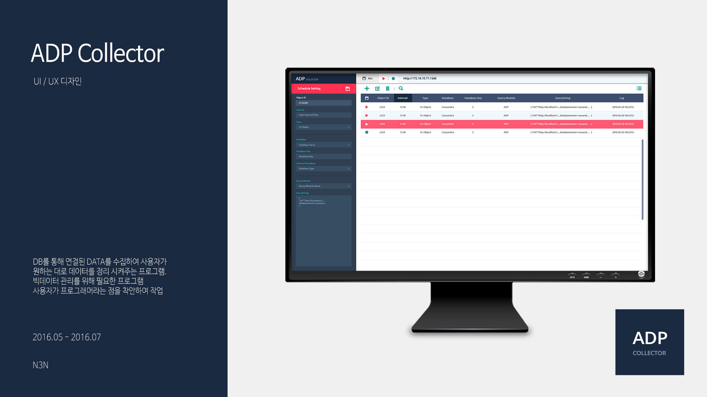
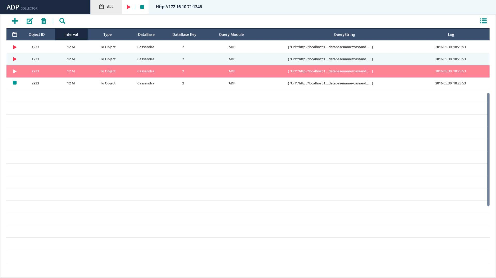
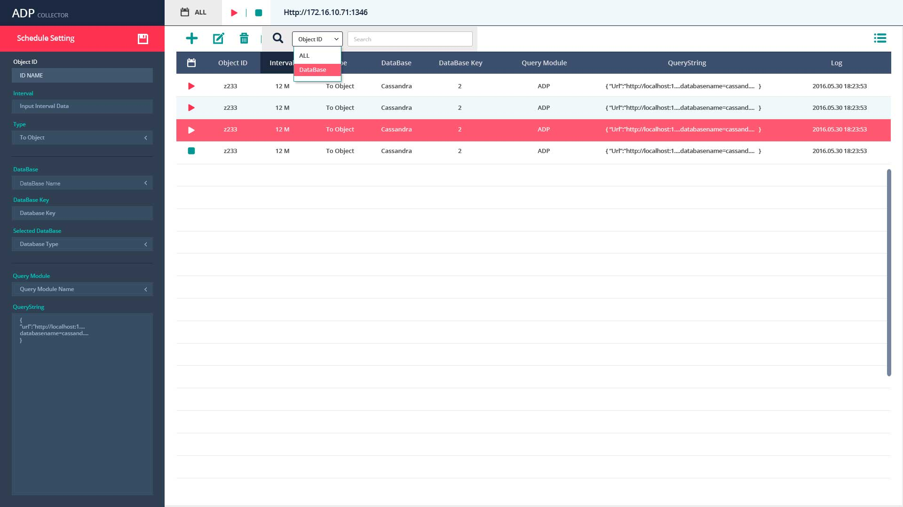

ADP Collector
Web Service
- 
- 
- 
-

데이터 수집기
Splunk와 Hadoop과 같이 특정 사이트의 Data를 수집하는 프로그램. 쿼리문을 통해 필터링이 가능하다. 사용자인 프로그래머들의 의견을 반영하여 UX 기획을 하였다. 리스트와 작업 영역을 한눈에 확인할 수 있어 작업자가 화면을 이동하지 않고 빠르게 처리할 수 있도록 화면을 설계하였다.
삼성반도체 생산지원 라인에서 반도체를 만들기 위해 필요한 연료들을 사람의 힘으로 관리되고 있었다. 그래서 정보가 느리게 전달되고 관리되지 않아 신속한 대처가 불가능했다. 다수의 공장 현황을 한눈에 볼 수 있는 UI 기획, 문제점을 쉽게 파악하기 위한 화면구성, 문제가 되는 정보를 그래프로 확인할 수 있게 구성, 생산지원 라인의 전체 공정을 파악하기 위한 화면 구성 등을 기획하였다. 반도체 공장의 일일 속보가 중요하다는 점을 파악하여 데이터를 연동시킨 실시간 속보를 기획하였다. 또 문제점을 쉽게 파악할 수 있는 화면구성을 하였다.
글로벌 철강회사 J사는 Big Data 활용으로 다수의 공장에서 생성되는 IoT 데이터를 통합해 분산된 공장들을 하나의 공장으로 운영하는 것처럼 집중 관리함으로써 제품 품질 향상을 원했다. 통합 운영 UI로 비즈니스/공장/설비 현황을 Single View로 구현, 실시간 데이터 및 영상을 활용한 직관적 UI로 Plate의 제조 공정 상세 조회, Operation Playback으로 제조 과정상의 오류를 파악, 설비의 실시간 IoT 데이터를 시각화하여, 전체 공정을 상세 모니터링, 여러 공장의 주요 현황을 한눈에 볼 수 있는 비즈니스 KPI 대시보드 구현하였다. 제철 공장 특성에 맞는 Chart를 기획하였고 문제점을 쉽게 파악할 수 있는 화면구성을 하였다.
INNOWATCH는 관제에 필요한 모든 요소들을 실시간으로 상황판에 통합 표출하여, 방대한 지역 혹은 현장을 파악하고 직관적인 의사결정을 할 수 있는 환경을 제공한다. 기존의 INNOWATCH의 불편한 UX와 명확하지 않은 UI들을 개선하였다. 큰 틀을 바꾸진 않았고 기존에 불편했던 점들을 수용하여 개선하는 것을 목표로 하였다. 사용자들의 요구 사항에 맞춘 White Theme를 적용한 UI를 기획하였다.
WIZEYE는 복잡하고 방대한 기업의 IoT 데이터에서 생성된 빅데이터를 수집/분석하여 시각화 맵을 통해 그려내므로 모든 비즈니스 및 운영 상황에 대한 완벽한 시각화를 제공한다. 이로써 단편적인 데이터가 아니라 비즈니스 전체에 대한 시야를 확보하고 현업에 영향을 미칠 수 있는 문제의 근본 원인을 직관적으로 찾아낼 수 있다. View / Edit / Content / Data Admin / Setting 모듈을 나누어 하나의 설루션으로 데이터 연결 / Map 작성 / 관제 / 사용자 관리 등... 다양한 업무처리가 가능하다. 사용자들이 Data를 쉽게 이해하고 활용하기 편한 것을 목표로 작업하였다.
Splunk와 Hadoop과 같이 특정 사이트의 Data를 수집하는 프로그램. 쿼리문을 통해 필터링이 가능하다. 사용자인 프로그래머들의 의견을 반영하여 UX 기획을 하였다. 리스트와 작업 영역을 한눈에 확인할 수 있어 작업자가 화면을 이동하지 않고 빠르게 처리할 수 있도록 화면을 설계하였다.